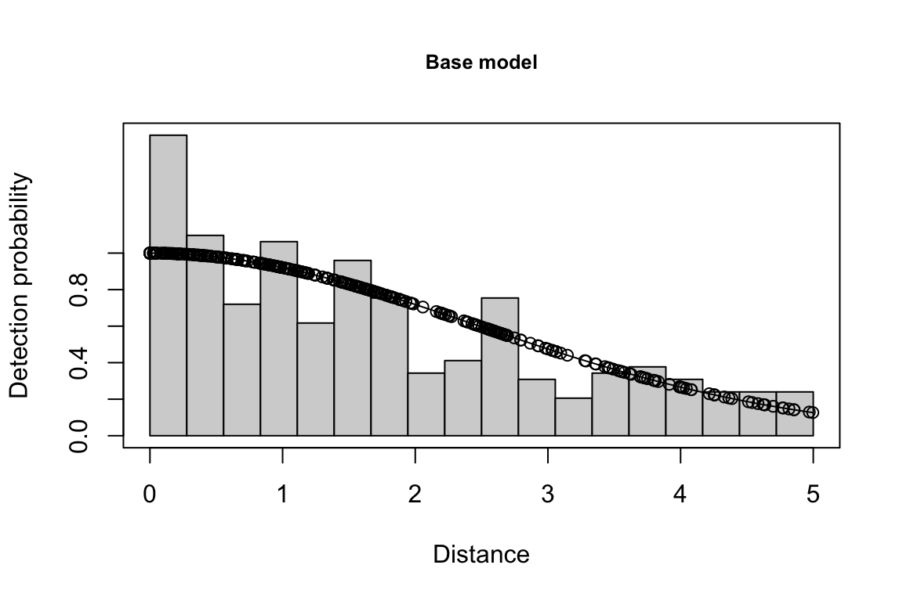
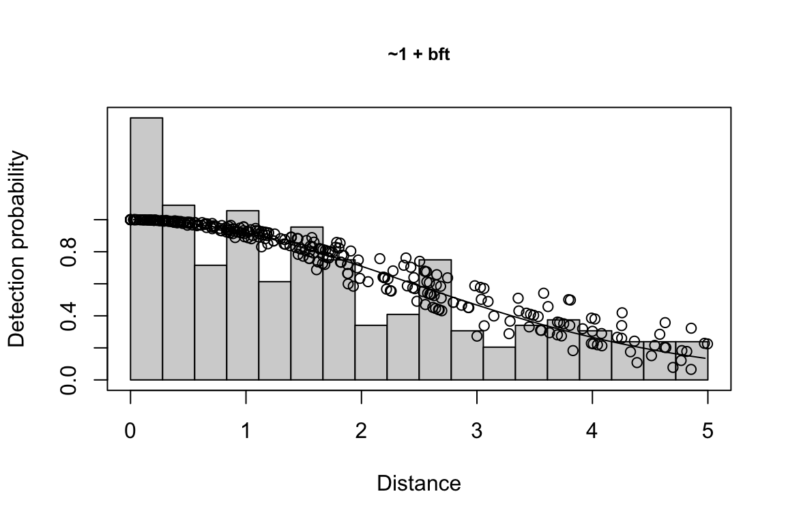
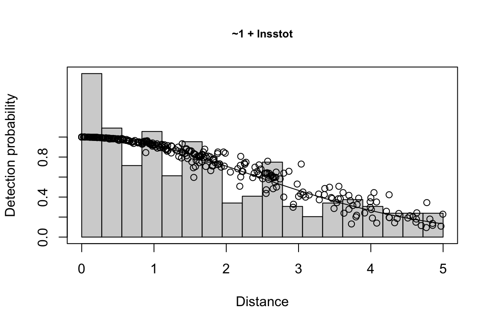
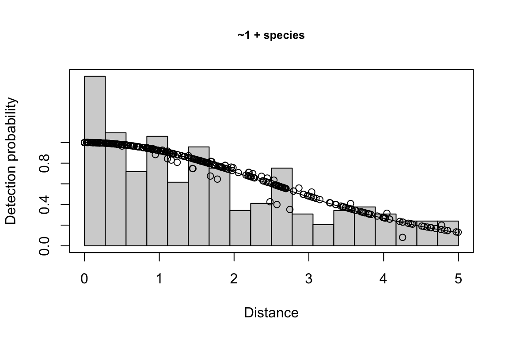
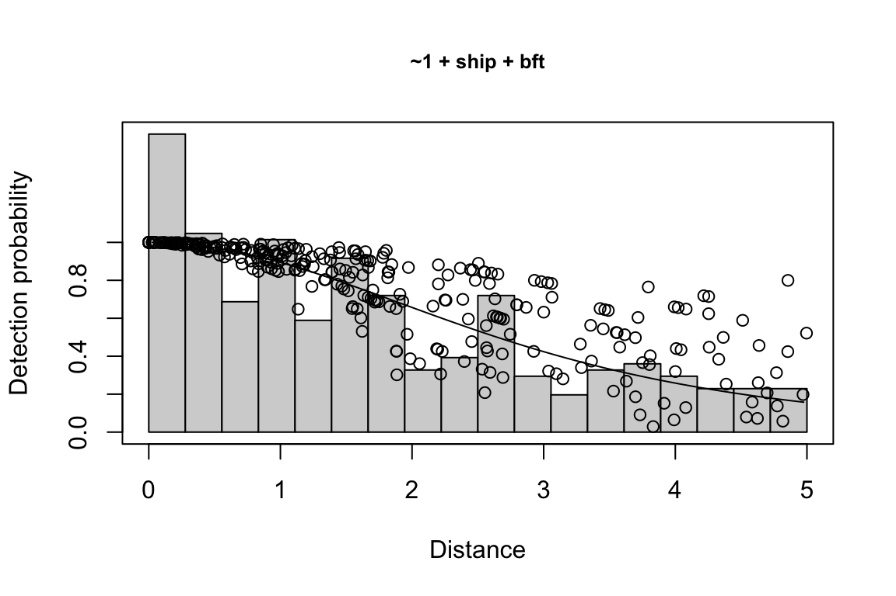
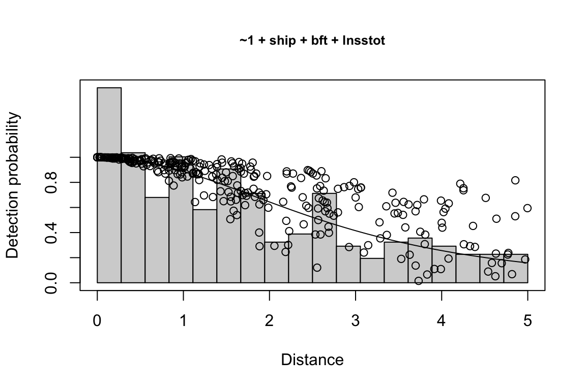

7 Line-transect analysis
Once you have produced a cruz object with process_surveys(), you are ready to carry out line-transect analyses (LTA) of your survey data.
The main LTabundR function for doing so is lta(), which requires three mandatory inputs in addition to cruz:
Below we explain each of these inputs, discuss other optional inputs, and explore the results produced by lta(). In our examples, we will use processed data from 1986-2017 NOAA surveys in the Central North Pacific, which is provided as a dataset built-in to LTabundR:
We will use these data to estimate the abundance of striped dolphins (Stenella coeruleoalba), Fraser’s dolphins (Lagenodelphis hosei), and Melon-headed whales (Preponocephala electra) within the Hawaii EEZ in 2010 and 2017, mirroring the analysis carried out in Bradford et al. (2021). In this study, the authors grouped these three species into a ‘species pool’ in order to gain a sufficient sample size for fitting a detection function. Species was then used as a covaraite within the detection function model, along with other variables including Beaufort Sea State, ship, and log-transformed school size.
Inputs
fit_filters
The fit_filters input specifies how to filter the data before fitting the detection function. It accepts a named list, which in our example will look like this:
fit_filters = list(spp = c('013', '026', '031'),
pool = 'Multi-species pool 1',
cohort = 'most',
truncation_distance = 5,
other_species = 'remove',
years = 1986:2017,
regions = NULL,
not_regions = NULL)spp: A character vector of species codes. Using multiple species codes may be useful when you have low sample sizes for a cohort of similar species.cohort: The cohort containing these species, provided as a number indicating which slot incruz$cohortsshould be referenced.truncation_distance: The truncation distance to apply during model fitting.
The remaining inputs are optional (i.e., they all have defaults):
pool: A character string, providing a title for this species pool. If not specified, the species codes used will be concatenated to produce a title automatically.other_species: A character vector with four recognized values:- If
"apply"(the default if not specified), the species code will be changed to"Other"for sightings in which the species was in a mixed-species school but was not the species with the largest percentage of the total school size. In those cases, the species was not as relevant to the detection of the school as the other species were, which may bias the detection function. This creates a factor level for the detection function to use (when"species"is a covariate) to distinguish between cue-relevant species that are within the specified pool and those that are not. - The second option for
other_speciesis"ignore", which does not reassign species codes to"Other", and ignores whether the species of interest held the plurality for a mixed species detection. - The third option is
"remove": any species re-assigned to"Other"will be removed before the detection function is fit; this can be useful if only a small number of species are re-assigned to"Other", which would then obviatespeciesas a viable covariate (since the sample size of allspecieslevels would be unlikely to exceeddf_settings$covariates_n_per_level– see below). - The fourth and final option is
coerce, which forces all species codes to"Other"for the purposes of detection function fitting and abundance estimation. This is effectively the same as removing ‘species’ from the list of covariates, but this option can be a convenience if you want to quickly toggle the use ofspeciesas a covariate for a specific species pool, and/or produce abundance estimates for unidentified taxa (e.g., an ‘Unidentified dolphins’ species pool that includes multiple species codes).
- If
years: A numeric vector of years, used to filter data to include only effort/sightings from these years.regions: A character vector of geostratum names, used to filter the data. Any segment or sighting occurring within any (but not necessarily all) of the providedregionswill be returned. This holds true for nested regions: for example, in analyses from the Central North Pacific, in which the Hawaii EEZ geostratum ("HI-EEZ") is nested within the larger geostratum representing the entire CNP study area ("OtherCNP"), an input ofregions = "OtherCNP"will return segments/sightings both inside the Hawaii EEZ and outside of it.not_regions: A character vector of geostratum names, similar to above. Any segment or sighting occurring within any of thesenot_regionswill not be returned. Using the example above, ifregions = "OtherCNP"andnot_regions = "HI-EEZ", only segments occuring withinOtherCNPand outside ofHI-EEZwill be returned. This can be particularly useful for abundance estimates for pelagic stock that exclude nested insular stocks.
Note that, generally, filters such as years, regions, and not_regions are less stringent for detection function fitting than they are for density/abundance estimation, since low sample size is typically an issue. The more detections the better, assuming the detectability does not changed over the years or across regions.
cruises: Filter data to only certain cruises, using a numeric vector of cruise numbers. IfNULL, this will be ignored.not_cruises: Filter out certain cruises from the data, using a numeric vector of cruise numbers. IfNULL, this will be ignored.
df_settings
The df_settings input specifies how to fit a detection function to the filtered data. It accepts a named list, which in our example will look like this:
df_settings = list(covariates = c('bft','lnsstot','cruise','year','ship','species'),
covariates_factor = c(FALSE, FALSE, TRUE, TRUE, TRUE, TRUE),
covariates_levels = 2,
covariates_n_per_level = 10,
detection_function_base = 'hn',
base_model = '~1',
delta_aic = 2)(Note that all of these inputs have defaults.)
covariatesCovariates you wish to include as candidates in detection function models, provided as a character vector. The covariates must match columns existing withincruz$cohorts$<cohort_name>$sightings. Note that the function will ignore case, coercing all covariates to lowercase. Default: no covariates.covariates_factorA Boolean vector, which must be the same length ascovariates, indicating whether each covariate should be treated as a factor instead of a numeric. Default:NULL.covariates_levelsThe minimum number of levels a factor covariate must have in order to be included as an eligible covariate. Default:2.covariates_n_per_levelThe minimum number of observations within each level of a factor covariate. If this condition is not met, the covariate is excluded from the candidates. Default:10.detection_function_baseThe base key for the detection function, provided as a character vector. Accepted values are"hn"(half-normal key, the default, which exhibit greater stability when fitting to cetacean survey data; Gerrogette and Forcada 2005),"hr"(hazard-rate), orc("hn", "hr), which will loop through both keys and attempt model fitting.base_modelThe initial model formula, upon which to build using candidate covariates. If not provided by the user, the default is"~ 1".delta_aicThe AIC difference between the model yielding the lowest AIC and other candidate models, used to define the best-fitting models. Typically, AIC differences of less than 2 (the default) indicate effectively equal model performance. If this value is not zero, then model averaging will be done: if multiple models are withindelta_aicof the model with the lowest AIC, all “best” models will be used in subsequent steps and their results will be averaged. SeeDetailsbelow.
estimates
The estimates input specifies which estimates of density and abundance to produce based on the fitted detection function. This input accepts a list of named sub-lists, which in our example will look like this:
estimates =
list(
list(spp = '013',
title = 'Striped dolphin',
g0 = .33, g0_cv = 0.20,
years = 2010,
regions = 'HI-EEZ'),
list(spp = '013',
title = 'Striped dolphin',
g0 = .32, g0_cv = 0.21,
years = 2017,
regions = 'HI-EEZ'),
list(spp = '026',
title = 'Frasers dolphin',
g0 = .33, g0_cv = 0.20,
years = 2010,
regions = 'HI-EEZ'),
list(spp = '026',
title = 'Frasers dolphin',
g0 = .32, g0_cv = 0.21,
years = 2017,
regions = 'HI-EEZ'),
list(spp = '026',
title = 'Melon-headed whale',
g0 = .33, g0_cv = 0.20,
years = 2010,
regions = 'HI-EEZ'),
list(spp = '026',
title = 'Melon-headed whale',
g0 = .32, g0_cv = 0.21,
years = 2017,
regions = 'HI-EEZ'))Each of these sub-lists specify the details for a single estimate of density/abundance, making it possible to produce multiple estimates from the same detection function model. Generally, there needs to be a sub-list for each species-region-year combination of interest, but there are options (see below) that allow for specifying multiple estimates with a single sub-list.
Each of these sub-lists accepts the following named slots:
spp: A character vector of species codes. Ifestimatesis a non-nested list andsppisNULL, the codes infit_filters$sppwill be used. Ifestimatesis a list of sub-lists,sppmust be specified in each nested list.title: A title for this abundance estimate, given as a character vector, ’ e.g.,"Striped dolphin - pelagic". If left blank, the species code(s) will be concatenated to use as a title. Note that, ifspp_method(below) is'each', thentitlemust be the same length asspp.spp_method: A character vector; if"each"(the default if not specified), density/abundance will be estimated for each species code insppseparately; if"pool", species will be pooled and a single estimate will be produced. The latter may be useful if you wish to combine a specific species code (e.g.,"075", blue whale) with an uncertain one (e.g.,"079", unidentified large whale). Ifc("each", "pool")is provided, each species will be estimated separately, then a new estimate will be produced for all species pooled.g0: A numeric vector of length 2: theg(0)for small and large groups. g(0) is the probability of detecting a species on the trackline. It is usually assumed to be 1.0 in distance sampling theory (1.0 is used as the default here), but is usually less than that for cryptic species – or any species in non-ideal survey conditions – and some data-rich studies are able to estimate g(0). Typically, the g(0) value is drawn from previously published tables, such as Barlow (2015), but you may estimate it yourself using theLTabundRfunctionsg0_bft_model()andg0_weighted_var(). Note that each list can only accept a single pair of g0 estimates (the first for small schools belowg0_threshold, the second for large schools above that threshold), which will be applied to all species in that list.g0_cv: A numeric vector of length 2: the coefficient of variation in the estimate ofg(0)for small and large groups. This value can also be drawn from previously published tables (e.g., Barlow 2015), but can also be modeled using recently developed Monte Carlo methods (Moore and Barlow 2017); you may also estimate a relative g(0) (i.e., the probability of detection in non-ideal conditions relative to ideal conditions) yourself using theLTabundRfunctionsg0_bft_model()andg0_weighted_var().g0_threshold: The school size threshold between small and large groups.years: A numeric vector of years, used to filter data to include only effort/sightings from these years.years_method: A character vector; if"each"(the default if not specified), density/abundance will be estimated separately for each year represented in the data; if"pool", years will be pooled and a single estimate will be produced. Ifc("each", "pool")is provided, each year will be estimated separately, then a new estimate will be produced for all years pooled.regions: A character vector of geostratum names, used to filter the data. #’ Any segment or sighting occurring within any (but not necessarily all) of the providedregionswill be returned. This holds true for nested regions: for example, in analyses from the Central North Pacific, in which the Hawaii EEZ geostratum ("HI-EEZ") is nested within the larger geostratum representing the entire CNP study area ("OtherCNP"), an input ofregions = "OtherCNP"will return segments/sightings both inside the Hawaii EEZ and outside of it.regions_method: A character vector; if"each"(the default if not specified), density/abundance will be estimated separately for each region represented in the data; if"pool", regions will be pooled and a single estimate will be produced. In this case, then theareaslot must be used to specify an area; if not provided, density but not abundance will be estimated. Ifc("each", "pool")is provided, each region will be estimated separately, then a new estimate will be produced for all regions pooled.regions_remove: A character vector of geostratum names, similar to above. Any segment or sighting occurring within any of thesenot_regionswill not be returned. Using the example above, ifregions = "OtherCNP"andnot_regions = "HI-EEZ", only segments occuring withinOtherCNPand outside ofHI-EEZwill be returned. This can be particularly useful for abundance estimates for pelagic stock that exclude nested insular stocks. Note that if this argument is specified, you will need to specify anareaargument (below) in order to obtain an abundance estimate in addition to a density estimate.forced_effort: If this is a single numeric value instead ofNULL(NULLis the default), this value will be used as the survey effort, in km, in a brute-force method; this same value will be used for every year and region. This is only helpful if you are looking for a relatively easy way to compare results from your own analysis to another (e.g., comparingLTabundRresults to reports from NOAA reports prior to 2021, in which effort was calculated slightly differently).area: A numeric indicating the area, in square km, of the pooled region. IfNULL(the default), the area for each region will be taken from thestratumlist within yourcruzobject, but you can override those values if you wish by specifying area here. Note that a value must be manually provided ifregions_methodcontains"pool", or ifregions_removeis specified and notNULL. If it is not provided in that case, only density (not abundance) will be returned.
Note that none of these inputs is actually required; all have defaults, which essentially copy from the inputs from fit_filters(). All the _method arguments have the default "each".
Variance estimation
By default, the lta() function produces a single estimate of the detection function and a single estimate of density/abundance estimate for each sub-list within estimates(). However, you can obtain the coefficient of variation (CV) of those estimates by activating the function’s bootstrap variance estimation feature. To do this, add bootstraps as an input specifying a large number of iterations (1,000 iterations is standard).
This command will first produce official estimates of the detection function and density/abundance, then it will repeat the analysis for the number of iterations you have specified. In each iteration, survey segments are resampled according to standard bootstrap variance estimation methods (see more details below, in “Behind the Scenes”).
Other inputs
lta(cruz,
fit_filters,
df_settings,
estimates,
use_g0 = TRUE,
ss_correction = 1,
bootstraps = 10
toplot = TRUE,
verbose = TRUE,)use_g0: A Boolean, with defaultTRUE, indicating whether or not to use customg(0)value(s). IfFALSE, the assumedg(0)value will be 1.ss_correction: Should a correction be applied to school sizes? School sizes will be scaled by this number. The default,1, means no changes will occur.toplot: A Boolean, with defaultTRUE, indiciating whether detection function plots (Distance::plot.ds()) should be displayed as the candidate models are tested.verbose: A Boolean, with defaultTRUE, indicating whether or not updates should be printed to the Console.
lta() output
During processing
While lta() is running, it will print things to the Console (if verbose is TRUE) and plot detection function fits (if toplot is TRUE). To demonstrate this, we will run the estimate for striped dolphins in 2010 only:
# Setup inputs:
fit_filters = list(spp = c('013', '026', '031'),
pool = 'Multi-species pool 1',
cohort = 'most',
truncation_distance = 5,
other_species = 'remove',
years = 1986:2017,
regions = NULL,
not_regions = NULL)
df_settings = list(covariates = c('bft','lnsstot','cruise','year','ship','species'),
covariates_factor = c(FALSE, FALSE, TRUE, TRUE, TRUE, TRUE),
covariates_levels = 2,
covariates_n_per_level = 10,
detection_function_base = 'hn',
base_model = '~1',
delta_aic = 2)
estimates =
list(
list(spp = '013',
title = 'Striped dolphin',
g0 = .32, g0_cv = 0.21,
years = 2017,
regions = 'HI-EEZ'))
# Run it:
demo <- lta(cruz,
fit_filters,
df_settings,
estimates)
Additionally, windows will appear showing details for the detection function models and details of the density/abundance estimate.
Outputs
The lta() function returns a list of objects. To demonstrate this output, we will pull in the built-in dataset representing the result of the analysis above, for all three species in both years (with 5 bootstrap iterations):
This list of results has five slots:
pool: The species pool pertaining to these estimates.inputs: A list of the inputs used to produce these estimates.estimate: A table of density/abundance estimates for each species/region/year combination specified in theestimatesinput.
lta_result$estimate
title species Region Area year segments km Area_covered
1 Striped dolphin 013 HI-EEZ 2454639 2010 142 17957.44 62800.60
2 Striped dolphin 013 HI-EEZ 2454639 2017 140 17260.92 69221.41
3 Frasers dolphin 026 HI-EEZ 2454639 2010 142 17957.44 64201.13
4 Frasers dolphin 026 HI-EEZ 2454639 2017 140 17260.92 52088.13
5 Melon-headed whale 026 HI-EEZ 2454639 2010 142 17957.44 64201.13
6 Melon-headed whale 026 HI-EEZ 2454639 2017 140 17260.92 52088.13
ESW_mean n g0_est ER_clusters D_clusters N_clusters size_mean size_sd
1 3.497191 19 0.33 0.0010580573 0.00047091315 1155.9220 51.37295 47.24913
2 4.010296 16 0.32 0.0009269493 0.00037062119 909.7414 36.85783 17.52562
3 3.575183 3 0.33 0.0001670617 0.00007110128 174.5280 236.20106 128.98893
4 3.017691 2 0.32 0.0001158687 0.00006035535 148.1506 355.63200 91.38621
5 3.575183 3 0.33 0.0001670617 0.00007110128 174.5280 236.20106 128.98893
6 3.017691 2 0.32 0.0001158687 0.00006035535 148.1506 355.63200 91.38621
ER D N
1 0.05435552 0.02261271 55506.05
2 0.03416534 0.01311434 32190.98
3 0.03946014 0.01706694 41893.18
4 0.04120660 0.02116271 51946.83
5 0.03946014 0.01706694 41893.18
6 0.04120660 0.02116271 51946.83df: A named list with details for the detection function.
lta_result$df %>% names
[1] "best_models" "all_models" "best_objects" "sightings" "sample_size"
lta_result$df$best_models
Model Key_function Formula Pmean AIC
1 9 hn ~1 + ship + bft + lnsstot 0.5576547 899.071
2 11 hn ~1 + ship + bft + lnsstot + species 0.5506719 899.998
$\\Delta$AIC Covariates tested pool
1 0.000 bft, lnsstot, ship, species Multi-species pool 1
2 0.927 bft, lnsstot, ship, species Multi-species pool 1bootstrap: If bootstrap variance estimation was carried out, the output would also includebootstrap, a named list with results from the bootstrap process, only returned if the bootstraps input is greater than 1.
Summary tables
To summarize lta() results using the standard table format provided in recent NOAA stock assessment reports, use the function lta_report().
Table 2 in reports: Sample sizes
Table 3: Parameter estimates
Table 4: Density/abundance
Behind the scenes
Covariates in detection function estimation
Before detection functions are modelled, any covariates supplied by the user and specified as a factor are first tested for eligibility. Only factors with at least two levels (or whatever you specified with df_settings$covariates_levels) and 10 observations in each level (or whatever you specified with df_settings$covariates_n_per_level) are eligible for inclusion.
Fitting a detection function
The detection function is estimated using functions in the package mrds, primarily the main function mrds::ddf(), which uses a Horvitz-Thompson-like estimator to predict the probability of detection for each sighting. If multiple base key functions (e.g., half-normal or hazard-rate) are provided, and/or if covariates are specified, model fitting is done in a forward stepwise procedure:
- In the first round, the base model (no covariates, i.e.,
"~1") is fit first.
- In the second round, each covariate is added one at a time; at the end of the round, the covariate, if any, that produces the lowest AIC below the AIC from the previous round is added to the formula.
- This process is repeated in subsequent rounds, adding a new covariate term in each round, until the AIC no longer improves.
- If a second base key is provided, the process is repeated for that second key.
All models within delta_aic of the model with the lowest AIC qualify as best-fitting models. The best-fitting model(s) is(are) then used to estimate the Effective Strip half-Width (ESW) based on the covariates associated with each sighting.
If multiple best-fitting models occur, we will find the average ESW for each sighting across all models, using a weighted mean approach in which we weight according to model AIC. To turn off this model averaging step, set delta_aic to 0 to avoid passing multiple models to the abundance estimation stage.
This stage of the lta() command is executed within a backend function, LTabundR::fit_df(), which has its own documentation for your reference.
Estimating density & abundance
Estimates are produced for various combinations of species, regions, and years, according to the arguments specified in your estimates list(s). Before these estimates are produced, we filter the data used to fit the detection function to strictly systematic (design-based) effort (i.e., EffType = "S"), in which standard protocols are in use (i.e., OnEffort = TRUE) and the Beaufort sea state is less than 7.
This stage of the lta() command is executed within a back-end function, LTabundR::abundance(), which has its own documentation for your reference.
Bootstrap variance estimation
If the bootstraps input value is greater than 1, bootstrap variance estimation will be attempted. In each bootstrap iteration, survey segments are re-sampled with replacement before fitting the detection function and estimating density/abundance.
Note that the entire process is repeated in each bootstrap: step-wise fitting of the detection function, averaging of the best-fitting models, and density/abundance estimation for all species/region/year combinations specified in your estimates input. At the end of the bootstrap process, results are summarized for each species/region/year combination. 95% confidence intervals are calculated using the BCA method (package coxed, function bca()).
g(0) values during bootstrapping
When conducting the non-parametric bootstrap routine to estimate the CV of density and abundance, uncertainty is incorporated into the g(0) value in each iteration using a parametric bootstrapping subroutine: First, a logit-transformed distribution is modeled based upon the mean and CV of g(0) provided by the user in the estimates input (see documentation for LTabundR::g0_optimize() for details on this step). This modeled distribution is used to randomly draw a g(0) value for each iteration of the density/abundance bootstrap routine. In this way, the uncertainty in g(0) is propagated into uncertainty in density/abundance.